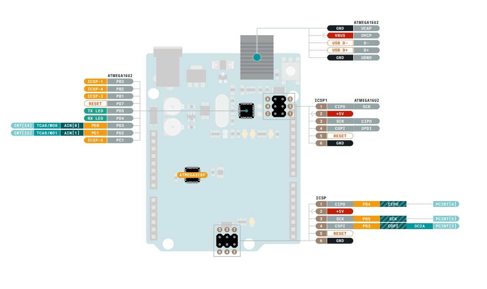
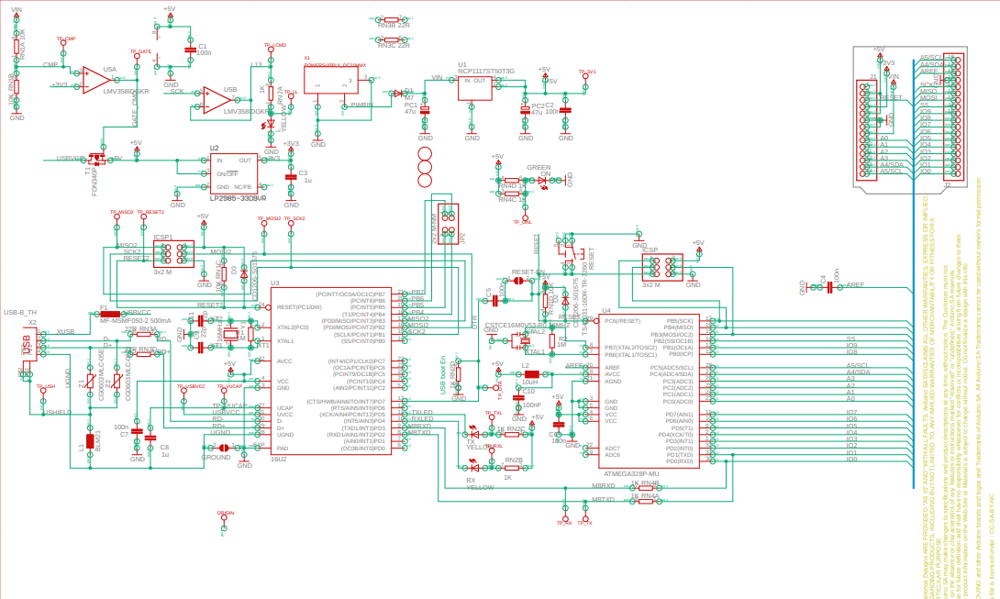

"SMD", yüzeye monte cihaz (surface-mount device) anlamına gelir ve mikrodenetleyici (ATmega328p) doğrudan karta lehimlenmiştir.
ATmega328P
Arduino UNO, elektronik ve kodlamaya başlamak için en iyi karttır.
Eğer platformla ilk deneyiminizse, UNO oynamaya başlamak için en sağlam karttır.
UNO, tüm Arduino ailesinin en çok kullanılan ve belgelenen kartıdır.
---
Şemalar
Analog Pinler:

Kart dört LED içerir:

Simülasyon Özellikleri

Burada Arduino UNO ATmega328p için teknik özellikleri bulacaksınız.
Kart
İsim
Arduino Arduino UNO R3 SMD
SKU
A000073
Mikrodenetleyici
ATmega328P
USB konnektörü
USB-B
Pinler
Dahili LED Pini
13
Dijital G/Ç Pinleri
14
Analog giriş pinleri
6
PWM pinleri
6
İletişim
UART
Evet
I2C
Evet
SPI
Evet
Güç
G/Ç Voltajı
5V
Giriş voltajı (nominal)
7-12V
G/Ç Pini başına DC Akım
20 mA
Güç Kaynağı Konnektörü
Barrel Plug
Saat Hızı
Ana İşlemci
ATmega328P 16 MHz
USB-Seri İşlemci
ATmega16U2 16 MHz
G/Ç Pini başına DC Akım
20 mA
Hafıza
ATmega328P
2KB SRAM, 32KB FLASH, 1KB EEPROM
Boyutlar
Ağırlık
25 g
Genişlik
53.4 mm
Uzunluk
68.6 mm